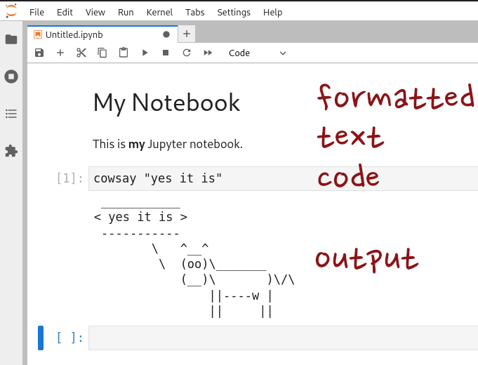

DataLad intro and background

Michał Szczepanik @doktorpanik
@datalad
@doktorpanik
@datalad
 datalad
datalad
|
|
Psychoinformatics lab,
Institute of Neuroscience and Medicine, Brain & Behavior (INM-7)
Research Center Jülich, Germany
Acknowledgements
|
Funders


|
|
Collaborators
|
|
What you should know about
- … command line
- … anaconda
- … pip
Command line
$ cowsay -w "Hello world"
_____________
< Hello world >
-------------
\ ^__^
\ (OO)\_______
(__)\ )\/\
||----w |
|| ||
Jupyter Notebook
Virtual environments and pip
venv-- creation of "virtual environments"pip-- package installer for Python PIP Installs Packages
$ python -m venv neuroinformatics2023
$ source neuroinformatics2023/bin/activate
$ pip install datalad
Conda
- Package management and environment management system
- Not just Python
$ conda create --name neuroinformatics2023
$ conda activate neuroinformatics2023
$ conda install -c conda-forge datalad
Git, git-annex and DataLad
- Git - the stupid content tracker
- With git-annex, git is instead "a stupid filename and metadata tracker"
- DataLad provides a unified interface and a set of routines
Talk is cheap, show me the code
youtube.com/watch?v=Yrg6DgOcbPEWhat is DataLad?
- A free and open source tool
- for decentralized (research) data management
- with a command line interface, Python API, and graphical user interface
- allowing exhaustive tracking of the evolution of digital objects
- and computational provenance tracking
- to enhance modularity, portability and reproducibility.
Let's explore this...
FAIR is the word
F
indableA
ccessibleI
nteroperableR
eusable
But the "I" in FAIR is not you
F?
I already have it, it's right here!A?
I am working with it already, I made it!I?
With what?R?
First let me finish this PhD and then we talk, OK?
Still, someone has to put in the work or nothing will ever be FAIR.
Be FAIR and immediately benefit from it yourself...
V
ersion-controlledA
ctionable metadataM
odularP
ortable
EUDAT B2DROP: data deposition and retrieval
Similar support for Surfdrive, Dataverse, Open Science Framework, S3, ...DataLad Gooey: Convenience for exploration and management
Companion (not competition) for the terminal
Metadata entry convenience
DataLad contact and more information
| Website + Demos | datalad.org |
| Documentation | handbook.datalad.org |
| Talks and tutorials | youtube.com/datalad |
| Development | github.com/datalad |
| Support | #datalad:matrix.org |
| Open data | datasets.datalad.org |
| Mastodon | @datalad@fosstodon.org |
| Meeting (Apr 2024) | distribits.live |